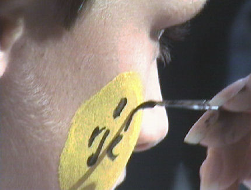
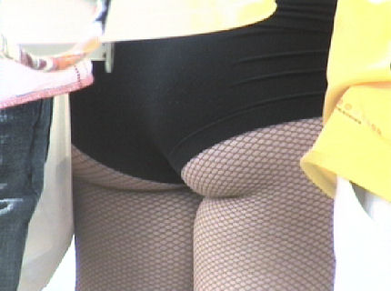

|
De Open Dag van Roda werd mede door het fraaie weer een groot succes.
Iedereen verdringt zich...
... voor de cheerleaders.

Professioneel schminck-werk.
A happy family.
Nederlands bekendste man in heel Ivoorkust!
En Huub zag dat het goed was...
Koffieboer als ultieme promotor voor deze heldhaftige helm.
In geel en zwarte geklede Rodagirls presenteren een voor een de spelers.
De "grand finale" waarna de spelers zich in de menigte verspreiden.
Sonko gaat niet naar de Wolves en Cristiano niet naar NAC. Nog niet!
Huub Narinx komt de nieuwe Voice kopen bij de FP-stand.

Een of andere artiest wordt aangekondigd.
Veel leuke danseresjes, cheerleaders en Rodagirls. Dat had Roda nu eens
prima georganiseerd!
Good girl!
Snelle jongen die De Jong. Maar toch nog op de foto.
Sommige mensen zijn gewoon gemaakt voor die helm...
Peters lucky day.

Moet kunnen...
De jongste telg van de SBC.
Een gezellige familiedag.
Deze wordt u aangeboden door:
Flexpoint!
OMG... hoe moet een mens zich zo op het voetbal concentreren.
De spelers gooien Roda-armbandjes in het publiek.
Dan volgt de prijsuitreiking van de Roda JC voorspellingscompetitie. Loes
heeft een shirt ontvangen welk uitgereikt wordt door Rick Creemers.
De team-competitie werd weer gewonnen door "Koempels Postert". Voor de
laatste keer overigens. Komend seizoen doen ze niet meer mee.
Het begint aardig te waaien maar het blijft heerlijk weer.
David blijft vrolijk, maar de bierpompen gaan nu echt dicht!
Maar gelukkig hebben we Peg nog en die is bijna klaar voor de grote stap...
© Koempels Pleasure Dome
|